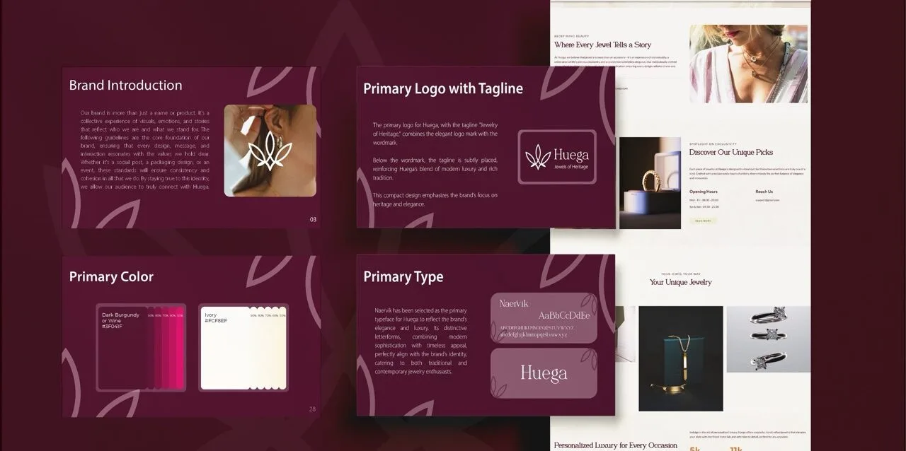

01
Huega
Brand Starter Pack · Fine Jewelry · 2025

I crafted the Huega premium jewelry brand from the ground up through its Brand Starter Pack, delivering logo design, brand identity, UI/UX, and an e-commerce website. The launch cut bounce rate by 28% and grew product views per session 2.5x.
- Brand Identity
- Logo & Monogram
- Packaging Design
- E-Commerce UI/UX
-28%bounce rate in month one
2.5×product views per session
1 systemlogomark to checkout UI
Role Brand & UI/UX Designer · Brand Identity, Packaging, E-Commerce UI/UX